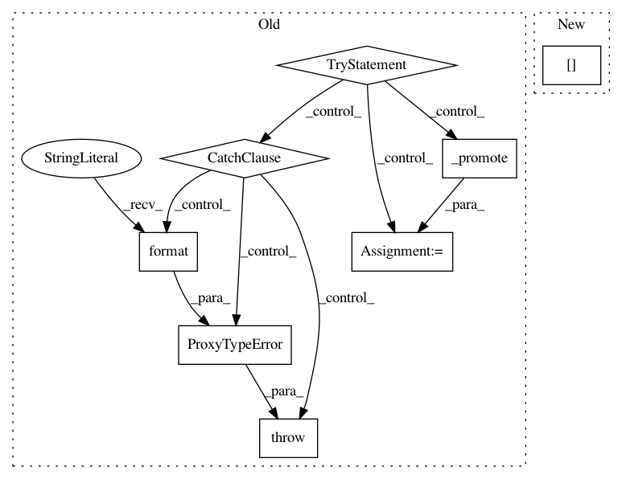

68828f650886dad698320814f98ce520b31cb5a1,descarteslabs/workflows/types/containers/tuple_.py,Tuple,__getitem__,#Tuple#Any#,94
Before Change
// TODO(gabe): slices
// TODO(gabe): cache
// TODO(gabe): no nested traceback on out-of-bounds index?
try:
promoted_item = Int._promote(item)
except ProxyTypeError:
raise ProxyTypeError(
"Tuple indicies must be integers, not {}".format(type(item))
)
item_type = self._type_params[item] if isinstance(item, int) else Any
// ^ if `idx` is a proxy Int, we don"t know which index we"re selecting and therefore the return type
return item_type._from_apply("getitem", self, promoted_item)
After Change
)
else:
item_type = (
Any if type_slice is None else Tuple[self._type_params[type_slice]]
)
return item_type._from_apply("getitem", self, item)
In pattern: SUPERPATTERN
Frequency: 3
Non-data size: 8
Instances
Project Name: descarteslabs/descarteslabs-python
Commit Name: 68828f650886dad698320814f98ce520b31cb5a1
Time: 2020-02-06
Author: 51922948+sdelany2@users.noreply.github.com
File Name: descarteslabs/workflows/types/containers/tuple_.py
Class Name: Tuple
Method Name: __getitem__
Project Name: descarteslabs/descarteslabs-python
Commit Name: 606ab2e4f73fd749b9191de4313b92b125b1cbba
Time: 2020-06-11
Author: gabe@descarteslabs.com
File Name: descarteslabs/workflows/types/containers/known_dict.py
Class Name: KnownDict
Method Name: __getitem__
Project Name: descarteslabs/descarteslabs-python
Commit Name: 606ab2e4f73fd749b9191de4313b92b125b1cbba
Time: 2020-06-11
Author: gabe@descarteslabs.com
File Name: descarteslabs/workflows/types/containers/known_dict.py
Class Name: KnownDict
Method Name: get